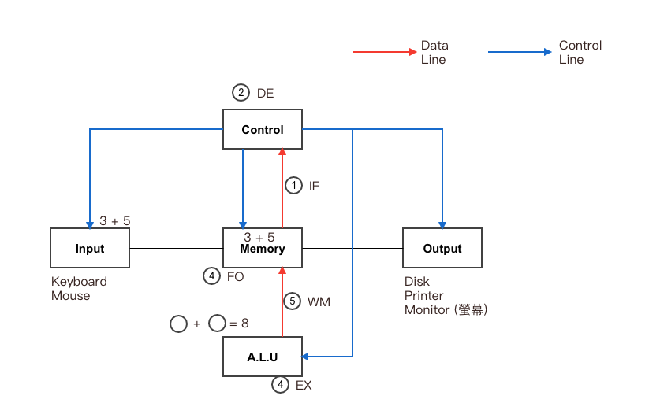
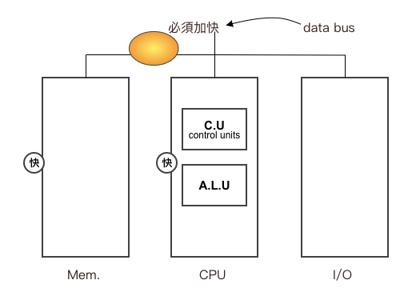
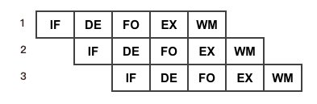
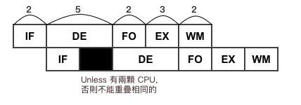
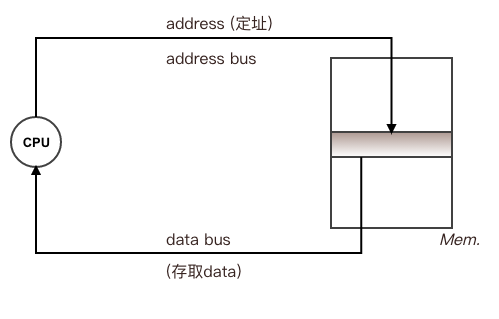

Chapter1-基本電腦概論
電腦系統介紹
電腦發展史
| 名稱 | 組成 | 體積 | Note |
|---|---|---|---|
| 1G 第一代電腦 | 由真空管 | 大 | 溫度高，速度慢 |
| 2G 第二代電腦 | 由電晶體 | 小 | 速度快，成本低，耗電低 |
| 3G 第三代電腦 | 由積體電路 | 更小 | 速度更快，成本更低，耗電更低 |
| 4G 第四代電腦 | 由超大積體電路 | ||
| 5G 第五代電腦 | 引入人工智慧技術 |
電腦架構
常見：范紐曼架構 Von-Neumann
特色：
- 採用 內儲程式 Stored Programming 概念：
指欲執行的程式(Program)跟資料(data)必須先載入記憶體(Mem.)中，再由 CPU 從 memory 中抓取資料處理之- 程式：
Def: 由指令組合之集合，永已達到某一特定任務 - 指令：
Instruction: 電腦最基本的執行單位，過程不可分割
ex: 3+5 =>+是指令
- 程式：
- 循序執行 Sequential Execution:
指令會依序一一執行- 圖示：

- 圖示：
五大單元結構

補充：Von Neumann 瓶頸
說明：
在 CPU 和 Mem. 處理速度不斷上升之下，資料的傳輸速度將成為瓶頸

機器指令週期 (Machine Cycle)
Def: 為 CPU 執行一個指令所需的時間
5個步驟：
- Instruction Fetch (IF) 指令擷取： 從記憶體中擷取指令
- Decode (DE) 解碼： 針對擷取指令解碼，以了解所需運算為何
- Fetch Operation (FO) 擷取運算元： 從記憶體中擷取 CPU 運算所需資料
- Execution (EX) 執行： 針對擷取資料進行運算
- Write to Memory (WM) 攜回記憶體：將運算結果寫回記憶體 (反正執行一定要抓運算元)

Pipeline 管線技術
Def: 指不同指令的不同執行週期重疊執行 (Overlay execution) 謂之
目的：提升系統的執行效能 (system performance 上升)
傳統指令：
In Pipeline:

CPU 速度沒變快，只是效能提高
例：
Q: IF=3, DE=5, FO=2, EX=3, WM=2,問採 Pipeline 下, 100條指令, 所需花的總時間？
Sol:
Max(IF, DE, FO, EX, WM) = 5
(N 條指令)
公式1: 第一條指令總時間 + (N-1) * Max(各週期值) = 510
(3+5+2+3+2) + 99 * 5
(常用)
公式2: 以最大週期數算所有週期 = 520
儲存單位
- bit (位元) => 0 & 1 => 為最基本單位
- byte (位元組) byte = 8 bits
說明 Tera Giga Mega Kilo 正確 2^40 2^30 2^20 2^10 近似 10^12 10^9 10^6 10^3
容量, 儲存相關 => 2進制
速度相關 => 10 進制
匯流排
- 位址匯流排(Address Bus)
- 負責傳送 CPU 所要存取的位址
- 可決定 CPU 所能處理的記憶體容量
- N 條位址線可以擁有 2 的 N 次方的記憶空間，而其位址為 0 至 2 的 N 次方來減 1 (從 0 開始，編號 0~2^N^-1)
- 資料匯流排(Data Bus)
- 負責傳送 CPU 所要存取的資料
- 其線數的多少代表 CPU 的字組 Word (大小)
- N 位元 CPU 亦就是此 CPU 有 N 條資料線 64 bits = 8 bytes word
- 控制匯流排(Control Bus)
- 負責傳送 CPU 所發出的控制訊號
- Ex: 計算 => address line + data line

例：
Q1: 電腦 Mem size = 4GB, 有 30 條 address line(決定格數), 問 CPU word size(data line => 決定格子大小)?
Sol:
格數 * 格子大小 = 總 Mem.
2^30 * X = 4GB
X = 4 bytes = 32 bits
Q2: Mem size = 4GB, 又 data line 有 32 條(32 bits = 4 bytes), 問 address line 至少有幾條？
Sol:
X * 4 bytes = 4GB
x = 1G = 2^30 格子 => 30 條
常見的時間單位
|毫(sec)|微(sec)|奈(sec)|皮(sec)|
|–|–|–|–|–|
1 ms|1 us|1 ns|1 ps|
10^-3 sec|10^-6 sec|10^-9 sec|10^-12 sec|
1 秒 = 10^3 ms = 10^6 us = 10^9 ns = 10^12 ps